Windows 10 / 11 Free and open source
OverTranslate If you can see the text, you can translate it
A Windows screen translator for comics, video and games, with screenshot translation, real-time translation and more.
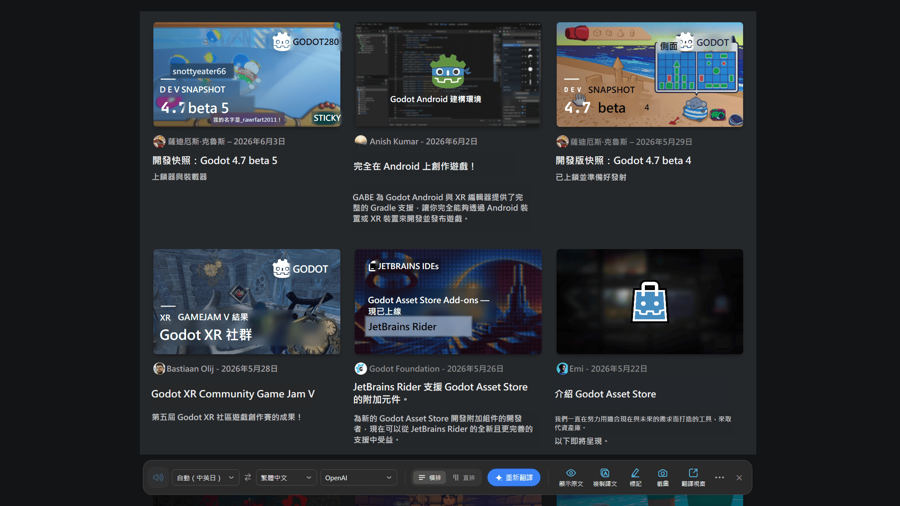
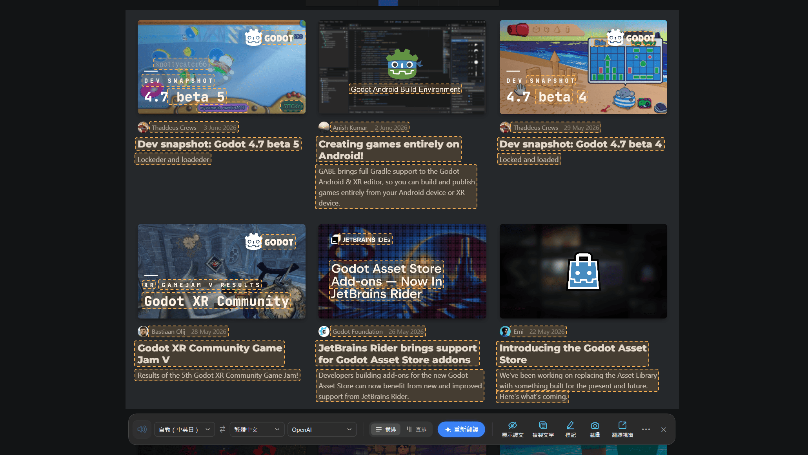
Features
Five ways to translate — pick the one that fits
OverTranslate offers five translation features, all of them a hotkey away.
-
Ctrl + Alt + A
Screenshot Translation
Select an area of the screen; the text is recognised and the translation is shown right on it.
-
From the main window
Real-time Translation
Select an area of a video, a game or a comic; the text is recognised continuously and shown right on it.
-
Ctrl + Alt + Q
Quick Lookup
Select some text and a compact translation popup opens; it can be pinned to stay on screen.
-
Ctrl + Alt + E
Quick Translate
Select some text and press the hotkey to translate it and replace it in place.
-
Ctrl + Alt + W
Text Translation
The full translation window, with text input, swapping languages and reading aloud.
The app screenshots on this site all show the Traditional Chinese interface. In the app itself you can switch between 繁體中文, 简体中文, English, 日本語 and 한국어.
Screenshot Translation
Select an area, and the translation covers the original
Press the hotkey, select the area you want translated, and the text on screen is recognised and translated. Works on web pages, PDFs, images, comics, video and games, and recognises Traditional Chinese, Simplified Chinese, English, Japanese and Korean automatically.
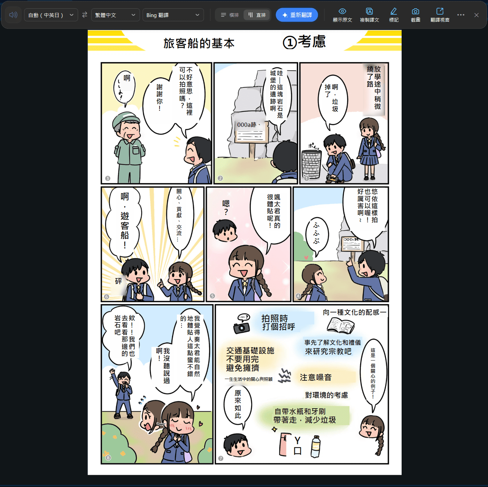
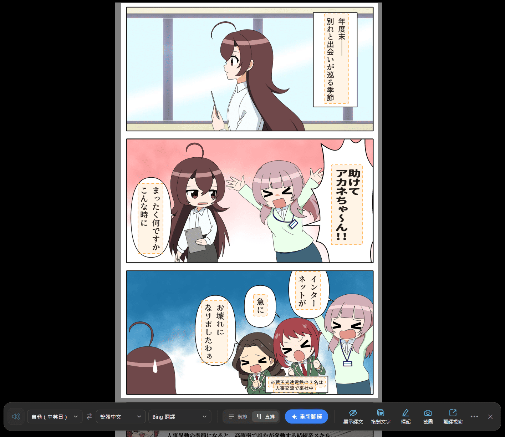
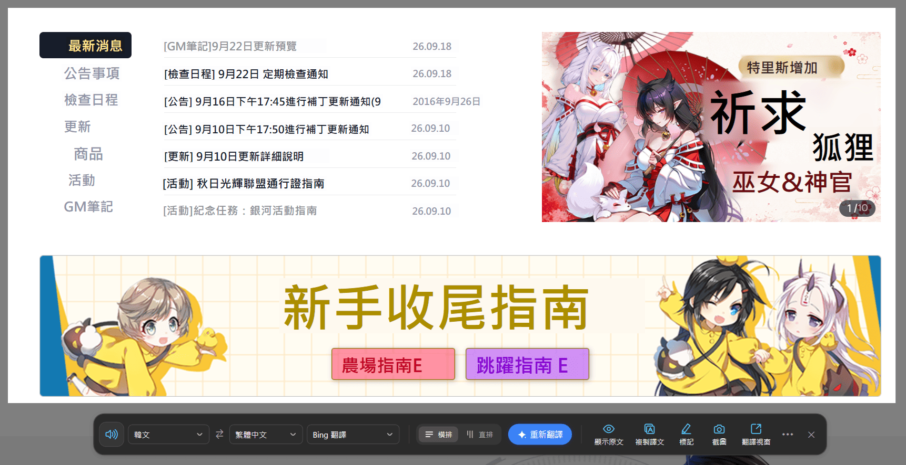
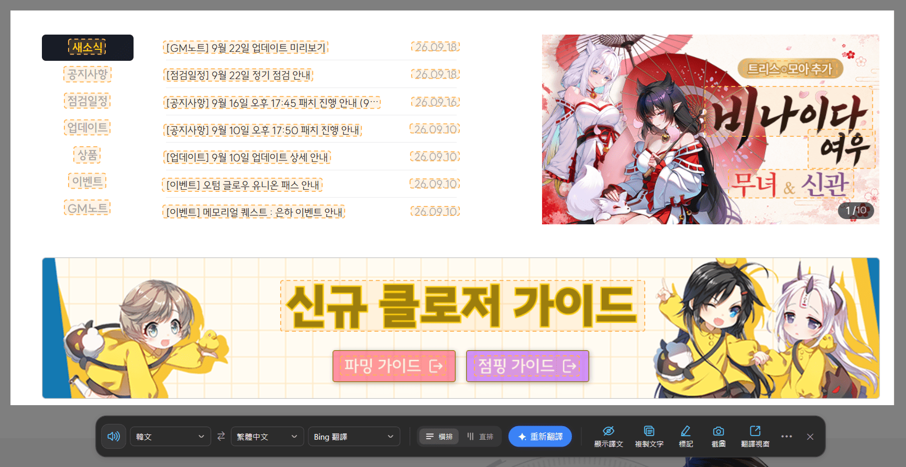
The toolbar can do more
- Copy textCopies the recognized text to the clipboard without translating it.
- ScreenshotCopies the selected area to the clipboard, and saves a file too when "Save screenshots" is on.
- AnnotateMark up the capture with the pen tools, then copy or save what you drew.

Real-time Translation
When the text changes, the translation updates
Select the area to translate and the text on screen is recognised continuously, with the translation updating on its own. Made for video subtitles, game screens and reading comics, and shown right where the original was.
Two capture sources
Capture the whole screen, or just one window.
Pause and resume any time
Pausing shows the original text without shutting it down.
For video subtitles, game story dialogue and comic lettering; use this mode when the content is writing meant to be read straight through.
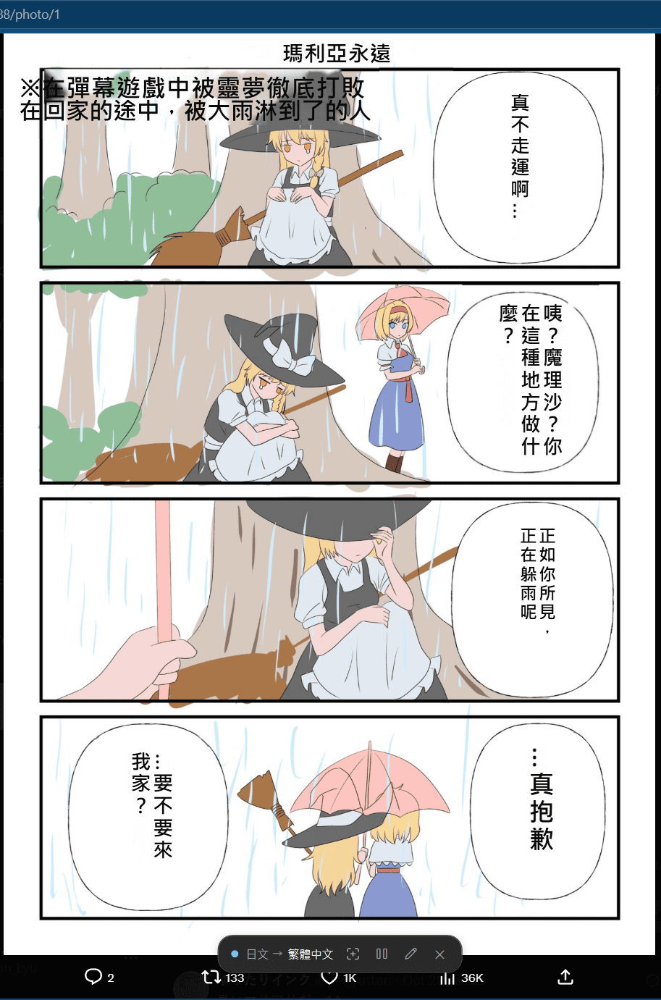
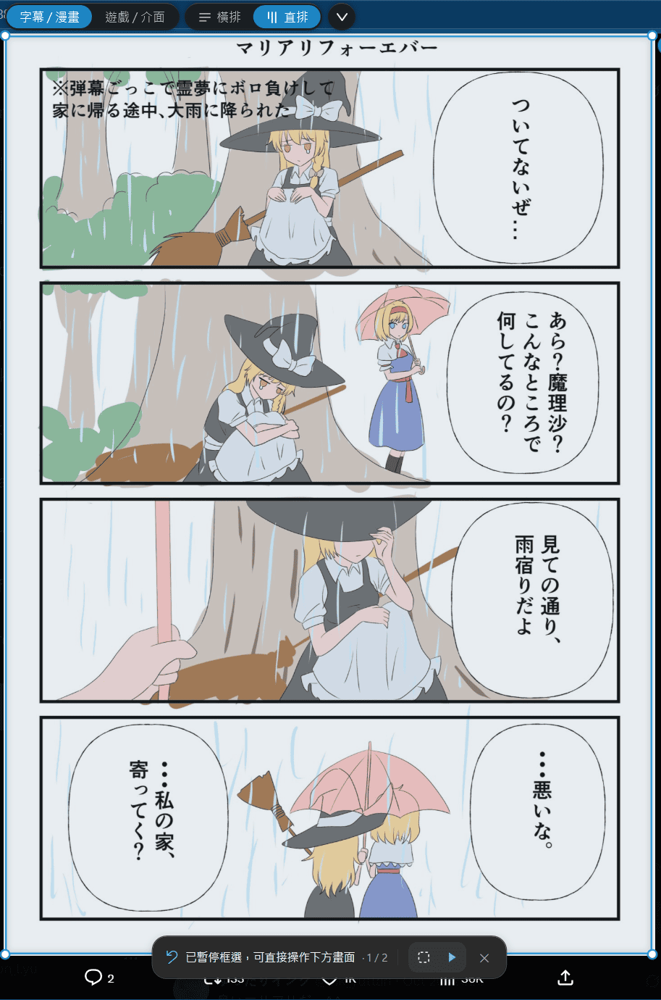


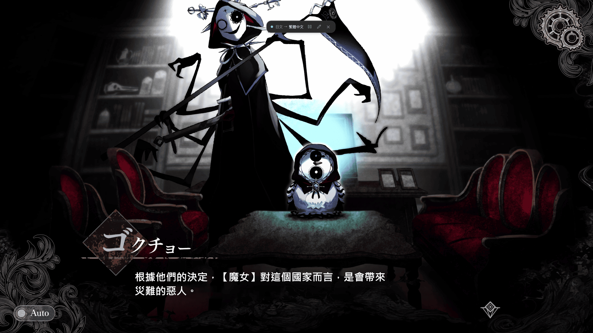
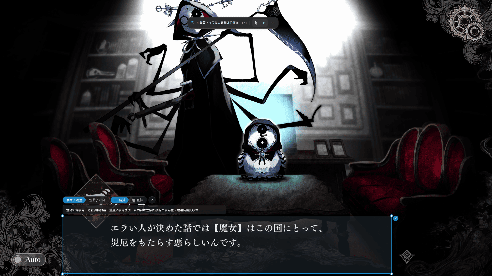
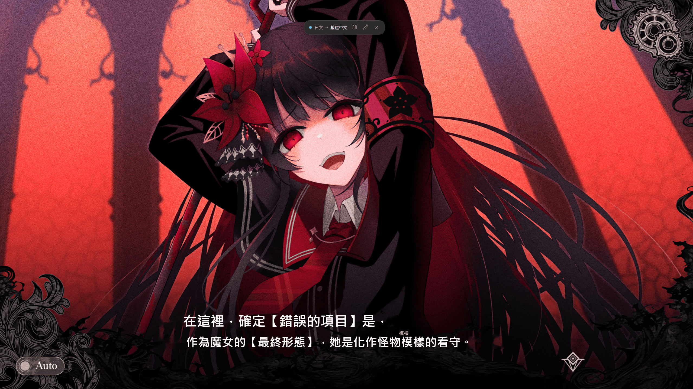
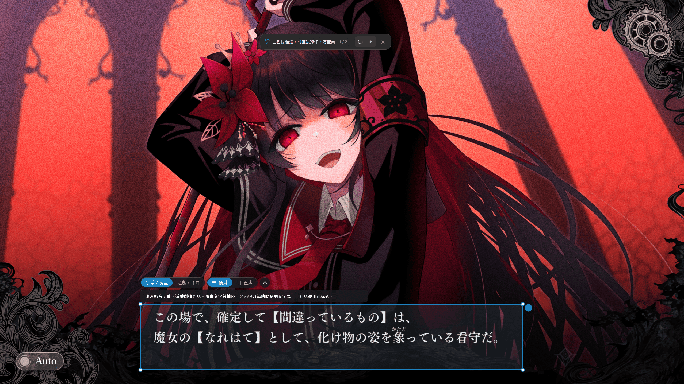
For game screens, chat windows, menus and interface text; use this mode when the content is not subtitles, story dialogue or comic lettering.


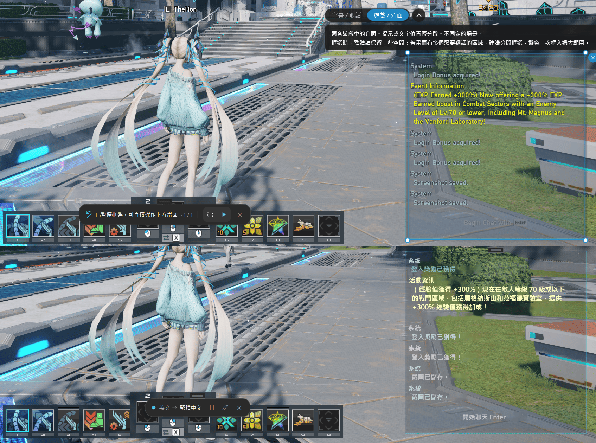
The look can be adjusted to suit
Text and background colour can follow the screen or be fixed, and the background opacity, border and preview are adjustable too.
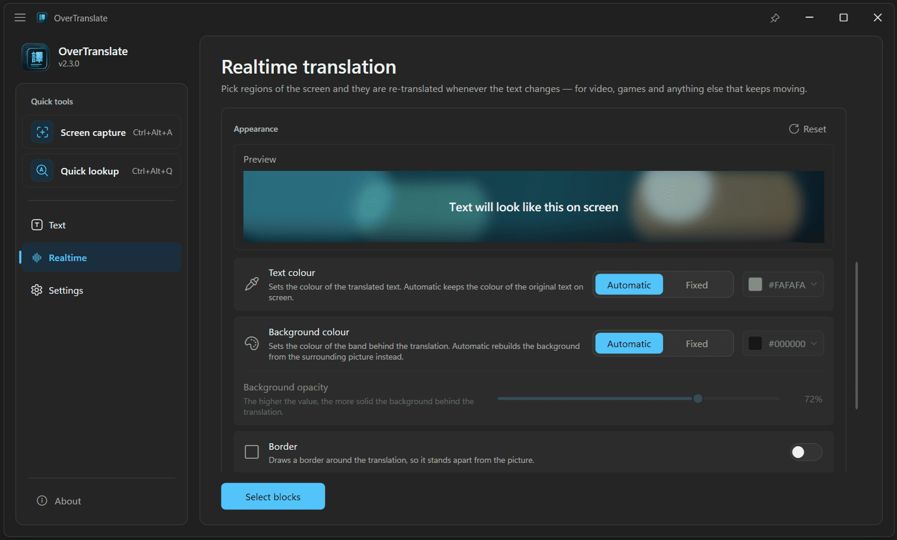
More ways to translate
Select it or type it — either way it translates
Select some text and press the hotkey and it is picked up and translated; with nothing selected you can type it in yourself, and the window can be pinned to stay on screen.

Select some text and press the hotkey: the translation is pasted straight over it with no window opening at all, in any field that accepts typed text.

Type or paste text to translate it, swap the source and target languages in one click, and have the original and the translation read aloud.

Translation services
Several translation services built in
The built-in services work as soon as the app is installed — no account to register, no API key to apply for.
-
Microsoft Translator
Stable and quick to respond
Default -
Bing Translator
Good translation quality
No setup -
Google Translate
Well-rounded, good for everyday use
No setup
Automatic fallback
When a translation service is unavailable or responds too slowly, the app switches to another one that works — no retrying or changing settings on your part.
External services and AI models
Beyond the built-in services you can add other translation services of your own, or translate with a local AI model. Neither is required for everyday use.
Privacy
Your screen and your data stay on your machine
The screen is recognised locally and the image is never uploaded. Only the recognized text is sent for translation, and with a local AI model even that stays on your machine.
Logs are stored on your machine only and are never uploaded automatically.
- 1 · Select
- The area you select stays on this machine.
- 2 · Recognize
- Recognition also runs here; the image never leaves.
- 3 · Translate
- Only the recognized text goes to the service you chose.
Settings
Set it up the way you work
- Interface languageTraditional Chinese, Simplified Chinese, English, Japanese and Korean, applied immediately; on first launch it follows your Windows display language.
- HotkeysKey combinations, single keys, mouse buttons and gamepad buttons all work, and each can be set to whatever suits you.
- ThemeLight and dark.
- Auto translateTranslates as soon as the screenshot area is selected, with no button left to press.
- Run at startup and save screenshotsLaunch automatically with Windows, and save captures automatically to a folder of your choice.

Download
Choose the version that suits you

Both versions support automatic updates
System requirements
- Operating systemWindows 10 / 11. In real-time translation, screen capture needs Windows 11 24H2 or later and window capture needs Windows 10 1903 or later.
- RuntimeThe installer bundles everything needed; nothing else to install.
- Advanced optionsDeepL and a self-hosted AI model need your own key or endpoint; the built-in services need no setup.
Support the project
OverTranslate is a free Windows translation tool. If this project helps you, feel free to buy me a coffee and support its continued development and maintenance.